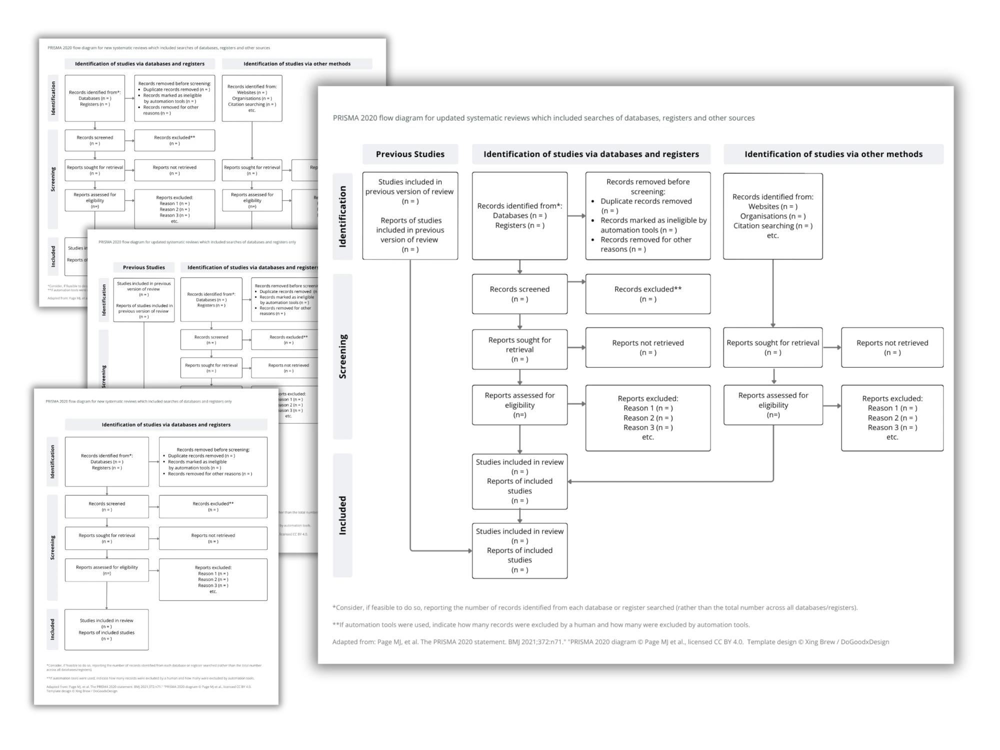

Which PRISMA 2020 Flow Diagram Template Do I Need?
PRISMA 2020 gives you four flow diagram templates, not one, and picking the wrong one is a common reason diagrams get flagged. They vary along two questions:

Question 1: Is your review new or an update?
A new review starts from scratch. An updated review carries forward studies from a previously published version — those get their own starting boxes.
Question 2: Did you search databases and registers only, or other sources too?
Databases and registers only (PubMed, Embase, trial registries) → the simpler template. If you also did citation searching, grey literature, website searches, or contacted authors → the wider template with extra boxes on the right side.
| Your review | Sources | Template you need |
|---|---|---|
| New | Databases + registers only | PRISMA 2020 for new reviews, version 1 |
| New | Plus other sources | PRISMA 2020 for new reviews, version 2 |
| Updated | Databases + registers only | PRISMA 2020 for updated reviews, version 1 |
| Updated | Plus other sources | PRISMA 2020 for updated reviews, version 2 |
The counting rule people get wrong
The diagram counts reports and studies separately — several reports can describe one study, so those totals aren't always equal. Track both from the start of screening, or you'll be reconstructing numbers at the write-up stage.
Editable templates that don't look like the default
The official templates are free Word files, and they look like it. My editable PRISMA flow diagram templates are designed PowerPoint files — restyle them to match your thesis or journal formatting, and they drop cleanly into posters, slides, and appendices. (For the record: the official templates are CC-BY licensed, so restyling them is explicitly allowed — just cite the source.)
Buy the templates (opens in a new tab)
Also see: CONSORT flow diagram template for trial reports, and my done-for-you poster design.